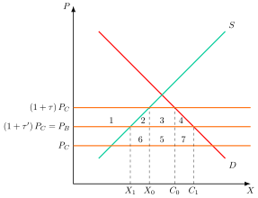
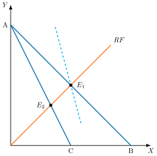
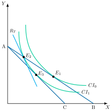
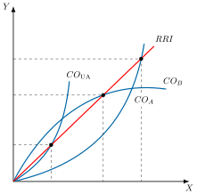
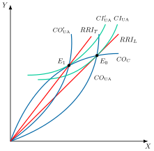
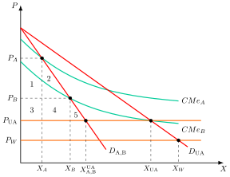
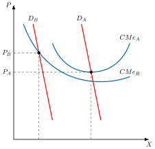
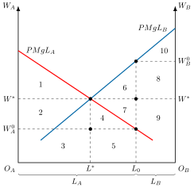

Apuntes para la oposición al Cuerpo de Diplomados Comerciales del Estado
18 Teorías de la integración económica.
Tema pendiente de revisión. Este tema está publicado pero aún no lo he revisado a fondo: puede contener erratas o partes por pulir.
18.1 Introducción  1'
1'
Tras la Segunda Guerra Mundial, la integración económica, el proceso por el que un grupo de países elimina barreras económicas entre ellos, avanzó casi sin pausa, primero con la rebaja de aranceles del GATT y la OMC y después con proyectos regionales como la Unión Europea. Parecía un camino sin retorno, la versión comercial del “fin de la historia”.1
Hoy esa idea se discute: la OMC está estancada, el regionalismo gana terreno, la guerra comercial entre Estados Unidos y China reabre el proteccionismo y la pandemia puso a prueba las cadenas globales de valor. La teoría de la integración económica estudia quién gana y quién pierde con la eliminación de barreras, y responde a una pregunta incómoda: ¿ganan siempre los socios, y ganan los demás? Para responderla, veremos el tema a través del siguiente esquema:
Fases y motivos de la integración económica.
Optimalidad de las uniones aduaneras como second best al libre comercio.
Teoría de las uniones aduaneras, desde un análisis de equilibrio parcial y general.
Efectos dinámicos a largo plazo de la integración económica.
Regionalismo y multilateralismo.
18.2 Fases y motivos de la integración económica 1'
Comenzando con las fases y motivos de la integración económica, de menor a mayor grado de integración se pueden distinguir siete fases, que desarrollan la clasificación de Balassa (1961), quien añadía una última, la integración económica total, con una autoridad supranacional, que queda fuera de este esquema.2
Fases
Área de comercio preferencial: definida como el sistema de preferencias aduaneras para determinados productos de determinados países.
Área de libre comercio: eliminación completa de aranceles entre los miembros, pero sin arancel común frente a terceros. Un ejemplo es el T-MEC, que sustituyó al NAFTA en 2020.
Unión aduanera: es un área de libre comercio con arancel común frente a terceros. Un ejemplo es el Mercosur, si bien se trata de una unión aduanera imperfecta porque su arancel externo común admite numerosas excepciones nacionales.
Mercado común: se trata de una unión aduanera que incluye el librecambio de factores productivos, analizado en el modelo de MacDougall (1960).3
Mercado único: se trata de un mercado común en el que se eliminan todas las barreras técnicas, jurídicas, burocráticas, etc. que obstaculizan de facto el comercio y la libre circulación de factores entre países.
Unión económica: como la Unión Europea, que consiste en un mercado único que implica la coordinación de las políticas macroeconómicas.
Unión monetaria: como la Eurozona, un mercado único en el que los miembros comparten moneda y política monetaria.
Motivos
Por otro lado, las causas de la integración económica pueden ser:
Políticas: con el fin de disminuir las tensiones políticas o para conseguir una mayor fuerza en la política exterior.
Económicas: con el objetivo de obtener un mayor bienestar conjunto, aumentar el volumen de comercio, disminuir la protección o disponer de mejores términos de comercio. Además, genera efectos dinámicos como las economías de escala, el movimiento de los factores o la coordinación de las políticas económicas.
18.3 Optimalidad de las uniones aduaneras como second best al libre comercio 30"
Para analizar la optimalidad de las formas de integración económica como, por ejemplo, las uniones aduaneras, hay que tener en cuenta que el comercio solo es óptimo cuando se cumple que la relación marginal de sustitución de la unión aduanera, \(RMS_{UA}\), es igual a la relación marginal de transformación de la misma, \(RMT_{UA}\), y además se iguala a la relación real de intercambio del mundo, \(RRI_{RM}\), es decir al ratio de precios internacionales: \[RMS_{UA}=RMT_{UA}=RRI_{RM} \tag{18.1}\]
Sin embargo, la teoría de la unión aduanera introduce el supuesto del arancel exterior común que no permite que se cumpla la relación anterior:
\[RMS_{UA}=RMT_{UA}\ne RRI_{RM} \tag{18.2}\]
Por lo tanto, el análisis de la optimalidad se realizará desde la óptica del second best, es decir, la que estudia qué ocurre con el bienestar cuando una restricción impide cumplir una de las condiciones de óptimo. En ese caso cumplir las demás no garantiza mejorar el bienestar, de modo que una unión aduanera puede dejar a los países mejor o peor que antes.4
Así, la integración económica entre países sería una política de second best respecto a la liberalización comercial a nivel global. No obstante, la integración económica tendrá distintos efectos sobre el bienestar que se analizan a continuación, comenzando por la teoría de las uniones aduaneras.
18.4 Teoría de las uniones aduaneras 11'30"
Dentro de las teorías de la unión aduanera, para los clásicos una unión aduanera siempre iba a ser beneficiosa ya que iba a permitir generar ganancias de la no producción de los bienes en los que no se tenía ventaja comparativa. Sin embargo, Viner (1950) muestra que la conclusión clásica no es correcta, introduciendo los conceptos de:
Creación de comercio (\(+\)): sustitución de producción nacional más cara por importaciones más baratas de un socio de la unión, lo que genera un efecto positivo sobre el bienestar.
Desviación de comercio (\(-\)): sustitución de importaciones del resto del mundo, que es el productor más barato, por importaciones más caras de un socio de la unión, de modo que el país paga más por lo mismo, lo que genera un efecto negativo sobre el bienestar.
Por tanto, la unión aduanera producirá un efecto positivo si el efecto creación de comercio es mayor que el de desviación de comercio.
Modelo de equilibrio parcial
Ambos efectos se pueden analizar en un modelo estático de equilibrio parcial, que parte de la distinción de Viner.
Supuestos
Parte de los siguientes supuestos
Existencia de 3 países: A, B, que son pequeños, y C, que representa al resto del mundo.
2 factores de producción homogéneos, con pleno empleo y perfecta movilidad entre sectores dentro de cada país, pero inmóviles entre países.
Mercado de competencia perfecta, con rendimientos constantes a escala y sin costes de transporte.
No existen obstáculos al comercio –salvo los aranceles–.
Solo existe comercio interindustrial, de modo que la creación de esa unión aduanera supondrá la eliminación de sectores en alguno de los 2 países.
Relación de precios, siendo \(P_{C}\) y \(P_{B}\) los precios a los que ofrecen el bien el resto del mundo y el socio comercial, \(P_{A}\) el precio de autarquía de A y \(\tau\) el arancel: \(P_{C}<P_{B}<P_{C}(1+\tau)<P_{A}<P_{B}(1+\tau)\). Es decir, el resto del mundo es más eficiente que el socio comercial, y este es más eficiente que A.
Análisis gráfico
Gráficamente, en un plano de cantidades, \(X\), y precios, \(P\), como el de la Figura 18.1, se representan la oferta, \(S\), y la demanda, \(D\), del país A. Así:
Se parte de una situación con arancel, siendo \(P_{C}\) los precios internacionales y \(P_{C}\left(1+\tau\right)\) los precios internacionales con el arancel, los cuales son menores que los precios del país B con arancel, importándose la diferencia entre el consumo, \(C_{0}\), y la producción, \(X_{0}\).
Si se introduce una unión aduanera, los precios de la unión aduanera con \(B\), \(P_{B}\), serán menores que los precios con arancel, \(P_{B}<P_{C}\left(1+\tau\right)\), por lo que el consumo aumentará respecto a la situación con arancel, \(C_{1}\), y la producción disminuirá, \(X_{1}\), aumentando las importaciones.

Efectos sobre el bienestar
En cuanto a los efectos sobre el bienestar, se generarán las áreas 1, 2, 3, 4, 5, 6 y 7:
El excedente del productor disminuirá en el área 1.
El excedente del consumidor aumentará en las áreas 1, 2, 3 y 4.
La recaudación disminuirá en las áreas 3 y 5.
Por consiguiente, el efecto sobre el bienestar será ambiguo, y dependerá de si el área 2, efecto producción de la creación de comercio, y el área 4, efecto consumo, son mayores que el área 5, efecto desviación de comercio.5
Así, el efecto de la unión aduanera sobre el bienestar del país A será mayor:
Cuanto menor fuese el volumen de importaciones antes de la unión aduanera, de forma que la desviación de comercio es menor.
Cuanto más próximo sea el precio de la unión aduanera al precio mundial, lo que implica mayor creación de comercio.
Cuanto menor sea el arancel común posterior, menor será el efecto desviación de comercio. El artículo XXIV del GATT permite las uniones aduaneras a condición de que los derechos aplicados frente a terceros no sean, en conjunto, más elevados ni más restrictivos que los vigentes antes de la unión.
Cuanto mayor sea la elasticidad de la oferta y de la demanda, al generar mayor creación de comercio.
Cuanto mayor sea el número de miembros que participan en la unión aduanera: cuanto mayor sea el número, mayor será la posibilidad de que en la unión aduanera participen los países más eficientes.6
Cuando el número de bloques comerciales supera los tres, cuanto mayor es ese número, menor es la desviación de comercio, ya que con multitud de pequeños bloques el arancel óptimo de cada uno es reducido. No obstante, la relación no es monótona: Krugman (1991b) señala que, con bloques simétricos y sin costes de transporte, el bienestar mundial es mínimo con tres bloques, mientras que un solo bloque equivaldría a libre comercio mundial y lo maximizaría.7
Comparación con una reducción de aranceles no discriminatoria
Por su parte, Cooper y Massell (1965) critican el punto de partida del análisis del modelo anterior, que plantea que con una unión aduanera se acerca a una situación de librecambio, argumentando que es preferible una reducción arancelaria ya que esta va a producir una ganancia inequívoca de bienestar.
Para estos autores, una reducción arancelaria permite importar más barato que con un arancel y del país más eficiente en el resto del mundo, por lo que no se producirá el efecto de desviación de comercio.
Gráficamente, en el mismo plano de la Figura 18.1, se parte de la misma situación. De esta forma, se supondrá que se reduce el arancel hasta que el precio internacional con arancel sea igual al precio del país B: \(\left(1+\tau^{\prime}\right)P_{C}=P_{B}\).
La reducción arancelaria produce los mismos cambios de excedentes que la unión aduanera, las áreas 1, 2, 3 y 4. La diferencia está en la recaudación, que pasa de las áreas 3 y 5 a las áreas 5, 6 y 7, porque ahora todas las importaciones, mayores que antes, proceden del país más barato. La ganancia neta es la suma de las áreas 2, 4, 6 y 7 y no hay área de desviación, ya que la 5 sigue siendo recaudación.8 En definitiva, según estos autores los países recurrirán a una disminución de los aranceles antes que formar una unión aduanera.
Crítica: las uniones aduaneras se siguen creando
¿Por qué entonces se crean las uniones aduaneras en vez de recurrir a reducciones de aranceles de este tipo? La respuesta es que este análisis es incompleto:
Es un análisis de equilibrio parcial, pues se considera solo un producto.
Se asume competencia perfecta, por lo que se ignoran los efectos: i) sobre la relación real de intercambio, ii) pro-competitivos, iii) de la diferenciación de productos, iv) del aprovechamiento de las economías de escala y v) de la especialización perversa.
No tiene en cuenta los efectos dinámicos.
Todos estos efectos son considerados por las teorías más modernas que analizan las uniones aduaneras, las cuales veremos a continuación.
Modelo de equilibrio general
Mediante un modelo de equilibrio general se van a introducir consideraciones sobre los efectos en relación a la relación real de intercambio, las economías de escala o el acceso a otros mercados.
En este sentido, el interés por la formación de uniones aduaneras se justifica por la existencia de un interés por exportar, ya que el análisis de Cooper y Massell es incompleto pues se considera que el país A solo importa el bien. Si todos los países importan y exportan, las pérdidas por la desviación de las importaciones pueden compensarse con las ganancias de los exportadores, que obtienen acceso preferente al mercado de los socios. Esas ganancias existen cuando el resto del mundo impone aranceles, como se verá a continuación.9
Así lo argumentan Paul y Ronald Wonnacott (1981), para quienes el análisis de Cooper y Massell es incompleto porque supone que el resto del mundo no impone aranceles. Si los impone, un exportador de bajo coste recibe por sus ventas al resto del mundo menos de lo que paga el mercado de la unión. Por eso las ventajas de la unión aduanera radican en la reciprocidad, que garantiza ese acceso, y no en las disminuciones arancelarias unilaterales.10
Reformulación de Viner: El modelo de Lipsey
Lipsey (1957) estudia las uniones aduaneras bajo una óptica de equilibrio general. Lipsey, en una reformulación del modelo de Viner afirma que este último no analizó la existencia de efectos sobre el bienestar como resultado de la sustitución de bienes, es decir, cuando hay cambios en los precios relativos. Por lo tanto, va a reformular el modelo de Viner teniendo en cuenta los precios relativos y asumiendo una productividad marginal constante –de esta forma, la \(FPP\) será recta11 y la especialización completa.
Por otro lado, Lipsey también indica que Viner supone que los bienes son consumidos en proporciones fijas, proporciones que serían independientes de los precios relativos.
Análisis gráfico de Viner con proporciones fijas
Gráficamente, en un plano de cantidades \(X\) e \(Y\) como el de la Figura 18.2, se analizará esta puntualización de Lipsey al modelo de Viner.
Para ello, se va a suponer un país pequeño especializado en el bien \(Y\), cuya especialización va a ser completa y los términos de intercambio vienen determinados por la recta \(AB\) y se representa la recta de consumo de proporciones fijas, \(RF\). Además, se van a asumir 3 países: A, B y el resto del mundo.
En este contexto, bajo condiciones de libre comercio el país estaría en equilibrio en el punto \(E_{1}\), exportando una cantidad de \(Y\) e importando una cantidad de \(X\) asociadas a dicho punto. Un arancel que no altere los términos de intercambio y que no sea lo suficientemente grande para proteger la industria \(X\) mantendrá el equilibrio en \(E_{1}\), aunque sí habrá modificado los precios relativos, representado por la línea de puntos.
No obstante, bajo el supuesto de consumo en proporciones fijas de Viner, modificaciones en los precios relativos no van a alterar estas proporciones por lo que el país permanecerá en \(E_{1}\) siempre que no se modifiquen los términos de intercambio con el exterior.

Sin embargo, si este país crea una unión aduanera desviadora de comercio con otro país:
Tendrá que comprar el bien \(X\), el cual importa, a un precio mayor al que podría conseguir antes de la creación de la unión aduanera representado ahora por la pendiente de la recta \(AC\).
Ahora el equilibrio se encontrará en \(E_{2}\) donde consumirá menos cantidades de ambos bienes, es decir, disminuirá el bienestar.
Por lo tanto, bajo los supuestos de Viner toda unión aduanera desviadora de comercio resultará negativa. Sin embargo, la formación de una unión aduanera modificará los precios relativos, lo cual debería inducir a la sustitución entre bienes consumidos, por lo que cambiarían los volúmenes comercializados.
Análisis gráfico modelo de Lipsey
Gráficamente, en un plano de cantidades \(X\) e \(Y\) como el de la Figura 18.3, se representan, sin el supuesto de proporciones fijas, las rectas de precios \(AB\) y \(AC\) y las curvas de indiferencia. Así:
Inicialmente antes de que exista un arancel o unión aduanera el equilibrio se encuentra en el punto \(E_{1}\), con una curva de indiferencia tangente a la misma, \(CI_{0}\).
La introducción de un arancel no cambia los precios relativos internacionales pero sí a nivel doméstico.
Este cambio se refleja en la pendiente de la recta \(R_{T}\), por lo que el nuevo equilibrio se encontrará en \(E_{2}\), sobre la línea \(AB\), alcanzando una curva de indiferencia menor –más cercana al origen–, \(CI_{1}\) y, por lo tanto, el bienestar disminuirá.

Este cambio se explica ya que al relajar el supuesto de proporciones fijas, la introducción de un arancel sobre el bien \(X\), aumentará su precio, disminuirá la cantidad consumida de \(X\) y aumentará la cantidad consumida de \(Y\). A su vez, el nuevo punto de consumo debe cumplir 2 condiciones:
Dado que los consumidores domésticos responden al precio relativo, la curva de indiferencia tiene que ser tangente a la recta de precios domésticos.
El nuevo punto de consumo tiene que situarse sobre la relación real de intercambio ya que los términos de intercambio con el resto del mundo no han cambiado.
Además, el punto de producción dado que se asume que la especialización es completa, seguirá siendo A.
En este contexto, la introducción de una unión aduanera provocaría:
El cambio de la relación de precios internacionales representados por una nueva recta de precios internacionales \(AC\) con un punto de consumo \(E_{3}\) en la misma curva de indiferencia que el punto \(E_{2}\), \(CI_{1}\).
No obstante, si la nueva recta de precios resultante de la unión, que también parte de A, tuviera una pendiente situada entre las de \(AC\) y \(AB\), es decir, si cortase el eje X entre los puntos \(C\) y \(B\), se accedería a una curva de indiferencia superior a \(CI_{1}\), aunque inferior a \(CI_{0}\), y el bienestar mejoraría respecto a la situación con arancel. Si la cortase entre el origen y \(C\), se accedería a una curva de indiferencia inferior a \(CI_{1}\), más cercana al origen, y el bienestar disminuiría.12
Conclusiones
En definitiva, el modelo de Lipsey matiza a Viner, ya que el efecto negativo de la desviación de comercio no es tan claro cuando los consumidores pueden sustituir bienes, pues depende de cuánto empeoren los términos de intercambio. Una unión desviadora de comercio puede así mejorar el bienestar respecto a la situación con arancel, aunque nunca alcanza el del libre comercio.13 Por lo tanto, de la misma forma que en el análisis de equilibrio parcial, en un análisis de equilibrio general Lipsey concluye que el efecto de una unión aduanera sobre el bienestar es ambiguo.
Modelo de Vanek
Por otra parte, Vanek (1965) va a analizar los efectos sobre la relación real de intercambio de una unión aduanera grande, ya que los países que van a formar parte de la unión aduanera van a tener cierto poder y capacidad de influir sobre la relación real de intercambio.
El modelo de Vanek parte de los siguientes supuestos:
Existen tres países, la economía doméstica, A, el socio de la unión aduanera, B, ambos países pequeños, y el país C que no es miembro de la unión aduanera y representa al resto del mundo.
Cada uno de estos tres países produce dos bienes, \(X\) e \(Y\). El país A exporta el bien \(X\) y tanto el país B como C exportan el bien \(Y\).
Análisis gráfico
A continuación, se va a realizar el análisis en 2 pasos.
En primer lugar, se formará la unión aduanera. Gráficamente, en un plano de cantidades importadas y exportadas de los bienes \(X\) e \(Y\) como el de la Figura 18.4 (a), se representan las curvas de oferta neta tanto del país A como del país B que van a formar la unión aduanera. De esta manera, la curva de oferta neta de la unión aduanera vendrá dada por las combinaciones de exportaciones e importaciones que realizarán conjuntamente los dos países para cada relación de intercambio.
Para la \(RRI\) representada, la curva de oferta neta de la unión aduanera vendrá dada por unas exportaciones del bien \(X\) y unas importaciones del bien \(Y\).14 Además, es necesario destacar que como los 2 países son pequeños, por separado se enfrentarían con una curva de oferta neta del resto del mundo perfectamente elástica.En segundo lugar, tras la formación de la unión aduanera esta gana importancia en el comercio mundial y se convierte en una economía grande. Gráficamente, en un plano de cantidades importadas y exportadas de los bienes \(X\) e \(Y\) como el de la Figura 18.4 (b), se representará la curva de oferta neta de la unión aduanera, \(CO_{UA}\), enfrentada a la curva de oferta neta del resto del mundo, \(CO_{C}\), estableciendo la nueva relación real de intercambio, \(RRI_{L}\).
En este contexto, a partir de los niveles de exportación e importación de la unión aduanera, si la unión aduanera decide comerciar en una situación de librecambio con el resto del mundo el equilibrio será \(E_{0}\), con la curva de indiferencia comercial asociada tangente a la \(RRI\), \(CI_{UA}\), pero si decide protegerse o comerciar solamente entre los socios que forma la unión aduanera, la curva de oferta neta de la unión aduanera se desplazará hacia la izquierda, generando nuevos equilibrios.


Ahora los países pequeños tienen poder de mercado, ya que si deciden protegerse disminuirá la oferta de exportación, generando un exceso de demanda y aumentando los precios de exportación internacionales y disminuyendo la demanda de importación creando un exceso de oferta que disminuirá los precios internacionales de importación, por lo que mejorará la relación real de intercambio.
Concretamente, de acuerdo con la teoría del arancel óptimo, este es el que hace que la curva de indiferencia comercial del país grande sea tangente a la curva de oferta del resto del mundo. Esto se logra mejorando la \(RRI\) con el arancel hasta \(RRI_{T}\), desplazando la curva de oferta neta, \(CO^{\prime}_{UA}\), y alcanzando el punto \(E_{1}\). En este punto los países miembros de la Unión Aduanera maximizan su bienestar ya que la curva de indiferencia comercial de la unión, \(CI^{\prime}_{UA}\) , es tangente a la oferta neta del resto del mundo, por lo que se cumple la condición de óptimo. En él, la relación marginal de sustitución, \(RMS_{UA}\), y la relación marginal de transformación, \(RMT_{UA}\), de la unión se igualan a la pendiente de la curva de oferta neta del resto del mundo en \(E_{1}\), que es la relación marginal de transformación a través del comercio, \(RMT_{C}\): \(RMS_{UA}=RMT_{UA}=RMT_{C}\). Esta pendiente marginal no coincide con la relación real de intercambio media, \(RRI_{T}\), que es la del rayo que va del origen a \(E_{1}\).15
Cambios en la RRI
Por consiguiente, los efectos sobre la mejora de la relación real de intercambio dependerán:
Positivamente del tamaño de la unión.
Positivamente del nivel del arancel exterior común, ya que producirá un mayor efecto de desviación de comercio, disminuyendo las importaciones del resto del mundo y por lo tanto disminuyendo el precio de las importaciones.
Negativamente del arancel que imponga el resto del mundo a las exportaciones de la unión aduanera, ya que reducirá el precio de exportación.
Positivamente de la mejora del poder de negociación para conseguir rebajas de los aranceles.
Efectos
En cuanto a los efectos:
Los precios relativos mejoran para el conjunto de la unión.
El país A mejora su relación real de intercambio, ya que su bien de exportación, \(X\), se encarece relativamente en el mercado interior.
El país B también mejora su relación real de intercambio y su bienestar aumenta, mientras que el de A puede disminuir porque su recaudación arancelaria cae de forma notable (Vanek 1965, 32-33).
Por consiguiente, la formación de una unión aduanera va a mejorar la relación real de intercambio de la unión aduanera al tiempo que empeora la del resto del mundo, lo que puede provocar que el resto del mundo aumente los aranceles contra la unión aduanera con un resultado de un menor volumen de comercio global y un menor bienestar global.
Puntualizaciones
Sin embargo, el propio Vanek mostró que existe un arancel exterior común con el que la unión mantiene sus intercambios con el resto del mundo.
Kemp y Wan (1976) generalizaron el resultado: si una unión aduanera sitúa un arancel exterior común de tal forma que se mantengan tanto el volumen como la estructura de comercio con el resto del mundo, no provocará desviación de comercio ni efecto sobre la relación real de intercambio. Por lo tanto, la formación de la unión con ese arancel no empeora a ningún país tercero y, con transferencias compensatorias entre los miembros, tampoco a ninguno de ellos, mientras que al menos uno puede mejorar.16
18.5 Efectos dinámicos a largo plazo de la integración económica 4'
No obstante, hasta el momento solo se han analizado los efectos estáticos, que son los cambios de bienestar por reasignar los recursos existentes tras la unión. Los efectos dinámicos son los que modifican la productividad o la acumulación de factores con el paso del tiempo, es decir, el tamaño de la economía y no solo su asignación. Por ello se van a analizar los efectos dinámicos a largo plazo de la integración.
El objetivo será analizar en qué medida una unión aduanera incide en la potencialidad del crecimiento a través del aumento de la productividad, del acceso a nuevos factores productivos o del aumento de la cantidad de factores productivos ya existentes.
Diferenciación de productos
Uno de estos efectos dinámicos es el aprovechamiento de las economías de escala y el mayor número de variedades de productos, lo que incrementa el bienestar, explicado por:
La Nueva Teoría del Comercio Internacional con el modelo de economías de escala internas y diferenciación horizontal de Krugman (1979). Este modelo muestra cómo el aumento del tamaño del mercado por una mayor integración económica puede conducir a un aumento de las variedades de productos disponibles y a un precio más bajo, lo cual es algo valorado positivamente por los consumidores.
La Novísima Teoría del Comercio Internacional permite explicar también el efecto selección y el aumento de la \(PMe\) del país del modelo de Melitz (2003). Así, las empresas exportadoras son las más productivas y la liberalización comercial aumenta la productividad de la economía.
Otro modelo que analiza el aprovechamiento de economías de escala gracias a la integración es el modelo de Corden.
Ampliación del tamaño del mercado: el aprovechamiento de las economías de escala
Al incrementarse el tamaño del mercado, la integración económica facilita el aprovechamiento de las economías de escala. De esta manera, Corden (1972) plantea que en presencia de economías de escala los conceptos de creación y desviación de comercio siguen siendo relevantes para evaluar los efectos sobre el bienestar de las uniones aduaneras, pero es necesario considerar dos efectos adicionales:
Efecto supresión de comercio: es un efecto negativo, que se produce cuando importaciones baratas del resto del mundo se sustituyen por la producción más cara de una empresa nueva de la unión, que solo es rentable gracias al mercado ampliado y al arancel exterior común.17
Efecto reducción de costes: es un efecto positivo, ya que el productor que abastece a toda la unión aduanera reduce su coste medio al aprovechar las economías de escala.
Supuestos del modelo de Corden
Para analizar el efecto de las economías de escala se parte de una versión sencilla del modelo de Corden en la que se supone que:
Existe un solo bien, el bien \(X\).
Existen dos países A y B que se integran en la unión aduanera y un tercer país que representa el resto del mundo.
Ambos países son similares y tienen idénticas curvas de demanda, \(D_{A}=D_{B}\).
Existen economías de escala18 y el coste medio es decreciente para los dos países, pero el país B es más eficiente en la producción que el A y el resto del mundo, por su parte, produce más eficientemente que A y B.
Análisis gráfico
Gráficamente, en un plano de precios, \(P\), y el bien \(X\) como el de la Figura 18.5:
Se representan las curvas de coste medios de ambos países, \(CMe_{A}\) y \(CMe_{B}\), la demanda, \(D_{\text{A,B}}\), que será idéntica para ambos y el nivel de precios mundiales, \(P_{W}\).
Se supone que antes de constituir la unión aduanera cada país impone un arancel con objeto de permitir el aprovechamiento de las economías de escala, pero sin que existan beneficios de monopolio, de forma que el mercado doméstico abastezca con la producción nacional. Así, el precio con arancel se igualará al coste medio de cada país, \(P_{A}\) y \(P_{B}\), proveyendo las respectivas cantidades del bien \(X\), \(X_{A}\) y \(X_{B}\).
Al constituir una unión aduanera entre A y B, la demanda total será igual a la suma de la demanda de los dos países individuales, \(D_{UA}\). Si se impone un arancel exterior común de cuantía \(\tau\), el precio en la unión aduanera será \(P_{UA}\), y el país B, más eficiente, aprovechará las economías de escala, produciendo una cantidad total \(X_{\text{UA}}\) , consumida a partes iguales por los dos países A y B, \(X^{\text{UA}}_{\text{A,B}}\). En el país A, se deja de producir e importa todo su consumo del país B.

Efectos sobre el bienestar
Respecto a los efectos sobre el bienestar, se generarán las áreas 1, 2, 3, 4, 5, produciéndose los siguientes efectos19:
Creación de comercio: en el país A se produce una ganancia de bienestar igual a las áreas 1 y 2, debido a la creación de comercio –no existe desviación de comercio al asumirse que el arancel era prohibitivo antes de la unión aduanera–. El país A elimina su producción doméstica, es decir, el productor de A cierra, y pasa a importar de B la totalidad de su consumo, a un precio menor, \(P_{UA}\), y en mayor cantidad.
Efecto reducción de costes: en ambos países el bienestar se incrementa al aumentar el excedente del consumidor en las áreas 3 y 4, por el efecto de la reducción de costes de producción debida al mayor aprovechamiento de las economías de escala, y en el triángulo del área 5, debido al mayor consumo por la reducción de precios.20
Cambios en el bienestar
En suma, el cambio en el bienestar va a depender del número de productores inicial y final tras el establecimiento de la unión aduanera:
En el caso de que cada país tuviera un productor antes de formar la unión aduanera, los efectos de la unión serán positivos.
En el caso de que solo un país tuviera un productor antes de formar la unión, los efectos serían ambiguos.
En el caso de que ningún país tuviera un productor antes de formar la unión, los efectos serían negativos.
En general, se puede afirmar que si tras la unión hay menos productores, el bienestar aumentará –salvo que haya especialización perversa–. Si hay los mismos, el efecto será ambiguo. Y si hay más, el bienestar disminuirá.
Especialización perversa
Si en el modelo anterior las demandas son distintas podría producirse lo que se denomina como especialización perversa como indica Grubel, en la que el país A, que es más ineficiente, acapara toda la producción de la unión aduanera debido a que su demanda doméstica antes de la constitución de la unión aduanera era muy superior a la del país B, más eficiente. Gráficamente, en un plano de precios, \(P\), y cantidades del bien \(X\) como el de la Figura 18.6, se representan las curvas de coste medio, \(CMe_{A}\) y \(CMe_{B}\), las demandas, \(D_{A}\) y \(D_{B}\), y los precios de partida de cada país, \(P_{A}\) y \(P_{B}\). En él se observa que A parte de un coste medio inferior, abasteciendo ambos mercados y, finalmente, dando lugar a una especialización perversa que genera ineficiencia productiva.

¿Por qué A, que es menos eficiente (es decir, con la curva de \(CMe\) por encima), parte entonces de un \(CMe\) inferior? Porque su mercado interior, mucho mayor, le permitía producir más y avanzar más a lo largo de su curva de costes medios decrecientes.
Intensificación de la competencia
Por otro lado, la entrada en el mercado doméstico de productores de otros socios de la unión aduanera que pueden vender sus productos libres de aranceles tendría un efecto intensificador de la competencia, a través de mecanismos similares a los que operan cuando una economía se abre al libre comercio:
La posibilidad de arbitraje hace que se reduzcan los diferenciales de precios, aunque este efecto dependerá de otros factores como los costes de transporte, la existencia de bienes no comercializables o las preferencias de los consumidores.
Reducción de las ineficiencias X: antes de la integración las empresas domésticas no estarían produciendo con la máxima eficiencia –estarían en un punto interior a la frontera de posibilidades– debido a deficiencias organizativas –asignaciones ineficientes de factores, duplicidades, etc.–. La integración comercial obligaría a las empresas anteriormente protegidas a superar esas ineficiencias para poder competir.21
Efecto disciplinador sobre el monopolista, por la competencia de las empresas de otros miembros de la unión aduanera. Si en la economía doméstica existe un monopolista protegido de la competencia exterior, producirá una cantidad tal que su ingreso marginal se iguale a su coste marginal, de modo que el precio será superior al de competencia perfecta. La entrada de competidores de los socios reduce su poder de mercado y acerca el precio al competitivo.22
No obstante, hay que señalar que no todos los efectos de la integración económica son necesariamente pro-competitivos, ya que las reestructuraciones necesarias para el aprovechamiento de las economías de escala pueden limitar el incremento de la competencia derivado de la apertura de los mercados al generar un aumento de la dimensión empresarial en muchas ocasiones vía fusiones y absorciones.
Inversión extranjera directa
Del mismo modo, la ampliación del tamaño del mercado puede dar lugar a un aumento de la inversión extranjera directa (IED) por dos vías:
Un mercado mayor eleva el tamaño óptimo de planta y hace rentables más proyectos de inversión.
Las empresas de terceros países pueden instalarse dentro de la unión para evitar el arancel exterior común, las llamadas “tariff factories”, según Jovanovic (2006, 232) y Feenstra (2004, 375).23
Así, la integración tiene dos efectos sobre la inversión, análogos a los del comercio. La creación de inversión es la respuesta estratégica de las empresas extranjeras a la posible desviación de comercio. La desviación de inversión aparece cuando las empresas del grupo reorganizan su producción dentro de él, de modo que la IED aumenta en unos países y disminuye en otros (Jovanović 2006, 232). Empíricamente, pertenecer a un acuerdo preferencial se asocia con mayores entradas de IED, tanto más cuanto mayores y más cercanos son los socios (Medvedev 2012). Además, la IED puede conllevar transferencia de tecnología y métodos de gestión, aumento del empleo y mayor competencia. Estos efectos conectan con el crecimiento a largo plazo, que se analiza a continuación.
Crecimiento económico
La integración económica, al permitir la libre circulación de bienes y servicios y de factores entre los países que forman parte del área de la integración, puede tener un efecto positivo sobre el crecimiento:
Por una parte, al mejorar la eficiencia en la asignación de recursos puede incentivar la inversión productiva en bienes de capital, lo que, de acuerdo al modelo de crecimiento de Solow, generaría un crecimiento positivo pero transitorio hasta alcanzar un nuevo estado estacionario con un mayor nivel de renta y stock de capital per cápita.
Por otra parte, la integración económica podría influir sobre el desarrollo de nuevas ideas y tecnologías lo que, en el marco de los modelos de crecimiento endógeno, podría generar crecimiento económico a largo plazo. En particular, Rivera-Batiz y Romer (1991) plantean un modelo de crecimiento endógeno con dos países en el que la integración a través del comercio de bienes de equipo e ideas, incentiva el aprovechamiento de las economías de escala en el sector de I+D, generando un mayor desarrollo tecnológico y, por tanto, crecimiento económico.
Integración y localización: Nueva Geografía Económica
La nueva geografía económica resalta los mecanismos impulsores de la aglomeración que no explica la teoría neoclásica del comercio internacional:
La nueva teoría del comercio internacional señala que existen incentivos a concentrar la producción en un único punto por la existencia de rendimientos crecientes a escala.
Si a esto se añaden costes de transporte, se generan incentivos a instalar la producción cerca de la demanda principal, es decir, el efecto mercado interno (home-market effect).
Esto genera un proceso circular donde la aglomeración de industrias atrae a más trabajadores, lo que a su vez conduce a una mayor concentración.
La integración altera estos incentivos porque reduce los costes de comerciar entre los socios. Krugman y Venables (1995) mostraron que, a medida que esos costes caen, la actividad tiende primero a concentrarse en uno de los países y, cuando caen mucho, parte de ella vuelve al otro, porque la concentración encarece allí los factores y el coste de transporte deja de pesar.24
A su vez, la globalización y la mayor integración económica han conducido a la deslocalización de la producción de muchas manufacturas. En consecuencia, ciudades típicamente industriales como Detroit o Buffalo han perdido industrias protagonistas de su actividad económica. Por tanto, la nueva geografía económica permite dar un fundamento teórico a los efectos de la globalización, que han generado ganadores y perdedores.25
18.6 Regionalismo y multilateralismo 1'30"
El regionalismo es la liberalización comercial preferencial entre un grupo de países, que discrimina frente a terceros. El multilateralismo es la liberalización no discriminatoria entre todos los miembros de la OMC, basada en la cláusula de nación más favorecida. Queda una pregunta de fondo, que planteó Bhagwati (1991): si los acuerdos regionales son peldaños (building blocks) o tropiezos (stumbling blocks) hacia el libre comercio mundial. Es, a escala global, la pregunta del second best.
Como peldaños, Summers (1991) sugirió que pocos bloques negocian con más facilidad que muchos países sueltos.26
Como tropiezos, Krugman (1991b) señaló que la objeción de fondo es política: el temor a que los acuerdos regionales erosionen el equilibrio de intereses que sostiene el sistema multilateral.
El artículo XXIV del GATT fija el límite jurídico. Exige que los aranceles frente a terceros no sean, en conjunto, más elevados que antes de la unión y que se liberalice lo esencial del comercio entre los socios. La práctica ha ido por delante, y Baldwin (1993) explicó por qué con su teoría del dominó: cuando un bloque se profundiza, los exportadores que quedan fuera presionan para entrar y el bloque se amplía. A 1 de octubre de 2026 había 388 acuerdos regionales en vigor notificados a la OMC, y al menos 84 más sin notificar. Aun así, a finales de 2022 el 83 % del comercio mundial de mercancías se realizaba todavía a arancel de nación más favorecida. Además, los acuerdos son cada vez más profundos, pues incluyen servicios, inversión o competencia.
Hoy el debate está abierto de nuevo. La UE y Mercosur aplican provisionalmente su acuerdo desde el 1 de mayo de 2026, Estados Unidos no renovó el T-MEC en la revisión de julio de 2026 y el FMI sitúa entre un 0,2 % y casi un 7 % del PIB mundial el coste a largo plazo de la fragmentación comercial.27
18.7 Conclusiones  30"
30"
Como conclusión, la integración económica no es buena ni mala por sí misma: es una política de second best cuyo resultado depende de si crea más comercio del que desvía y de cómo se reparten sus ganancias. Lo decisivo no es si integrarse, sino cómo, con quién y con qué arancel exterior.
Actualmente se observan diferentes escenarios que lo muestran como:
Unión Europea: la cohesión territorial, con los fondos estructurales y de cohesión, y el Mecanismo de Recuperación y Resiliencia plantean quién compensa a las regiones que pierden con la integración.
Mercosur: es una unión aduanera imperfecta y su acuerdo con la UE se aplica provisionalmente desde mayo de 2026. ¿Crea comercio con el mundo o lo desvía entre socios?
Fragmentación: con la guerra comercial y un T-MEC sin renovar, ¿son los bloques peldaños o tropiezos hacia el libre comercio?
Dentro de cada país: la nueva geografía económica recuerda que los perdedores se concentran en lugares concretos, como Detroit o Buffalo. ¿Basta la compensación?
Apéndice
18.A.1. Teoría del mercado común
En el análisis de las uniones aduaneras, se ha supuesto la existencia de pleno empleo y perfecta movilidad del trabajo entre las industrias de un mismo país: los países intercambiaban bienes, pero no factores de producción. La creación de un mercado común supone la libre circulación de los factores de producción entre los países. De esta manera, el trabajo tiene perfecta movilidad, las empresas pueden establecerse en cualquiera de los países que lo componen y pueden obtener financiación del mercado de capitales de cualquiera de ellos.
El mercado único supone la eliminación de todas las barreras técnicas, fiscales y administrativas a esa libre movilidad de bienes y factores. En el mercado común pueden subsistir controles administrativos, normas técnicas o tratos fiscales distintos que limiten de hecho esa libre movilidad, y el mercado único garantiza que esas barreras no existen.
Por consiguiente, el objetivo ahora es analizar cuál es el efecto de esta movilidad de factores sobre los países que componen el mercado común, por lo que se utilizará el modelo de MacDougall (1960), formulado originalmente para la movilidad del capital. Se analizará para el caso del factor trabajo, cuya movilidad supondrá una redistribución de ganancias, beneficiosa para unos y perjudicial para otros.
Se analiza el mercado de trabajo de dos países, A y B, en los que se suponen rendimientos constantes a escala, por lo que se cumple el teorema del agotamiento del producto, permitiendo expresar la producción total como la suma del valor de la productividad marginal de cada uno de los factores, es decir \[\begin{align*} Y_{A} & =W_{A}\cdot L_{A}+R_{A}\cdot K_{A}\\ Y_{B} & =W_{B}\cdot L_{B}+R_{B}\cdot K_{B} \end{align*}\]
Si se supone fija la cantidad de capital utilizada en cada país, el mercado de trabajo se puede representar conjuntamente. Gráficamente, en un plano de salarios, \(W_{A}\) y \(W_{B}\), y cantidades de trabajo como el de la Figura 18.7, se representan las productividades marginales del trabajo, \(PMgL_{A}\) y \(PMgL_{B}\).

Se parte de un nivel de salarios \(W^{0}_{A}\) y \(W^{0}_{B}\), y un reparto inicial del trabajo, \(L_{0}\), entre el país A, \(L_{A}\), y B, \(L_{B}\), de modo que el trabajo total de los dos países es la longitud de \(O_{A}\) a \(O_{B}\). Con el mercado común, el factor trabajo se mueve hacia el país con mayor salario, en este caso B, hasta que se igualen. El nuevo equilibrio se dará en: \(W_{A}=W_{B}=W^{*}\). Como consecuencia, la producción:
Disminuye en el país A en el área 4+5 –antes era 1+2+3+4+5–.
Aumenta en el país B en 4+5+6+7 –antes era 8+9+10 más el rectángulo inferior sin numerar–.
El efecto neto es un incremento de la producción mundial de 6+7, lo que permite afirmar que un mercado común aumenta la producción y, en principio, el bienestar mundial.28
Analizando la distribución:
En el país A aumentan los salarios en 2+4+7 –antes era 3+5, mientras que el aumento 4+7 son los trabajadores de A que se han ido a trabajar a B–, mientras que cae la remuneración de los capitalistas en 2+4 –antes era 1+2+4–.
En el país B los salarios caen en el área 8 –antes eran 8+9 más ese rectángulo–, aumentando la retribución al capital en el área 6+8 –antes solo tenía 10–.
En consecuencia, los trabajadores saldrán beneficiados en A en detrimento de los capitalistas, y al revés en el país B. De esta forma habrá ganancias, pero con distintos beneficiados.
Por otro lado, si en lugar del factor trabajo, se analizan los efectos de la movilidad del capital, se llegará a la misma conclusión. La única diferencia reside en que los poseedores físicos del capital no tienen que moverse a otros países. De este modo, los beneficios de reasignación del capital en un mercado financiero integrado pueden repartirse más fácilmente entre los capitalistas de todos los socios comerciales.
En suma, la libre movilidad de factores productivos que permite el mercado común tiene un efecto positivo sobre el bienestar global porque produce una mejor asignación de dichos factores. No obstante, se generan ganadores y perdedores –lo que puede explicar la aparición de políticas que restrinjan los movimientos internacionales de factores–.
A pesar de que la movilidad internacional del trabajo genere ganadores y perdedores, una autoridad superior podría tratar de distribuir las ganancias entre los países –por ejemplo, la UE–.
Sin embargo, cabe indicar un par de puntualizaciones:
Hay que tener en cuenta que en muchas ocasiones los emigrantes son jóvenes formados (fuga de cerebros), lo cual tiene un efecto aún más negativo en el país de origen.
En el modelo se ha supuesto que los trabajadores que emigran gastan sus rentas en el país de destino. Si envían parte de ellas como remesas, una porción de las áreas 4, 5 y 7 vuelve al país de origen, cuyos residentes pueden salir ganando. El país de destino no pierde por ello, porque la ganancia de sus nativos, el área 6, no depende de dónde gasten los inmigrantes su salario.29
18.A.2. Factores de los que depende el efecto de la unión aduanera en el análisis de equilibrio parcial
Además de los factores vistos en el análisis de equilibrio parcial, el efecto de una unión aduanera sobre el bienestar, ambiguo según Viner, depende de otros seis:
Positivamente, del volumen de comercio entre los propios miembros: cuanto más comerciasen entre sí previamente los miembros de la unión aduanera, menor será el efecto desviación de comercio.30
Negativamente, del volumen de comercio entre los miembros y el resto del mundo: cuanto más comerciasen previamente los miembros de la unión aduanera con el resto del mundo, mayor será el efecto desviación de comercio.
Positivamente, de la magnitud de los aranceles previos: cuanto mayores fuesen los aranceles previos, mayor será el efecto creación de comercio.
Positivamente, del grado de competencia entre las economías de los países miembros, es decir, de cuánto se parecen sus estructuras productivas y, por tanto, de lo sustituibles que son sus bienes: cuanto mayor sea, mayor será el efecto creación de comercio y menor será el efecto desviación de comercio. En el caso extremo en que los países A y B producen el mismo bien industrial, y A importaba bienes agrícolas del resto del mundo, C, tras formarse la unión seguirá importándolos de C porque B no produce ese tipo de bien, por lo que no hay efecto desviación. En cambio, como ambos países producen bienes industriales, es muy probable que sí haya efecto creación de comercio.
Positivamente, del diferencial entre el coste de producción de A y el del socio B: cuanto más caro produce A frente a B, mayor será el efecto creación de comercio.
Negativamente, del diferencial entre el coste del socio B y el del resto del mundo, C: cuanto más caro produce B frente a C, mayor será el efecto desviación de comercio.
18.A.3. Integración y localización: nueva geografía económica y costes de transporte
Es un hecho que la riqueza, la población y el empleo están distribuidos espacialmente de forma desigual, tanto a nivel regional como entre países. Estos desequilibrios pueden surgir por dos motivos:
Determinantes de primera naturaleza: la distribución desigual de los recursos naturales y los factores geográficos, como la proximidad a materias primas, a vías naturales de comunicación o el clima.
Determinantes de segunda naturaleza: el resultado de la acción humana y, principalmente, de factores económicos como la estructura de mercado o las reglas de precios.
La nueva geografía económica estudia dónde tiene lugar la actividad económica y las fuerzas que hay detrás. Krugman (1991a) señala que, si la producción está sujeta a economías de escala, la empresa se beneficiará concentrando toda la producción en una sola localización. Su modelo centro-periferia muestra que la aglomeración puede aparecer incluso en ausencia de diferencias exógenas entre dos regiones.
Las economías de escala y los costes de transporte, de tipo iceberg, generan dos tipos de fuerzas:
De aglomeración: las empresas tienden a localizarse cerca de los grandes mercados de bienes y de sus proveedores de bienes intermedios. Una mayor concentración de empresas atrae a más trabajadores, y estos aumentan la demanda de bienes.
De dispersión: los factores de producción inmóviles, como los recursos naturales, encarecen cuanto mayor es la concentración, y las empresas quieren evitar la competencia.
El resultado depende del nivel de los costes de transporte. Cuando son altos domina la dispersión, y cuando bajan de cierto umbral dominan las fuerzas de aglomeración y la industria se concentra.31 Krugman y Venables (1995) añadieron eslabonamientos entre industrias. Al bajar los costes de transporte, la industria tiende primero a concentrarse en un país y, cuando bajan mucho, la concentración encarece allí los factores y parte de la industria vuelve al otro.
18.A.4. Evidencia empírica
Existe extensa evidencia empírica acerca de los efectos y las ganancias de la integración, así como de las pérdidas derivadas de la desintegración. Se repasan los principales hitos de esta literatura:
Ganancias de la integración
Entre las ganancias estimadas destacan:
Comercio: Baier y Bergstrand (2007) estimaron que un acuerdo de libre comercio duplica aproximadamente el comercio bilateral entre sus miembros al cabo de diez años. Egger y Larch (2011) encontraron que los Acuerdos Europeos de los años noventa aumentaron de forma significativa el comercio entre la UE-15 y los países de Europa Central y Oriental, aunque desviaron parte del comercio procedente de terceros países.
Crecimiento y productividad: Billmeier y Nannicini (2013) aplicaron el método de control sintético a episodios de liberalización económica y hallaron un efecto positivo sobre el PIB real per cápita en la mayoría de las regiones, pero no significativo en las liberalizaciones de los años noventa. Kutan y Yigit (2007) encontraron mejoras de la productividad y convergencia hacia los niveles de la UE en cinco países que se adhirieron. Bustos (2011) halló que las rebajas de los aranceles brasileños dentro de Mercosur aumentaron la inversión en tecnología de las empresas argentinas. Iacovone (2012) mostró que la liberalización asociada al TLCAN aumentó en promedio la productividad de las empresas manufactureras mexicanas, y más en las más avanzadas. Cabral y Mollick (2012) analizaron la convergencia regional del producto de México tras el TLCAN.
Inversión extranjera directa: Medvedev (2012) estimó que formar parte de un acuerdo preferencial aumenta las entradas netas de IED, más cuanto mayores y más cercanos son los socios.
Margen actual de ganancias
La UE aún tiene un amplio margen de ganancias para profundizar en la integración económica. Esto se puede observar estimando la ecuación de la gravedad de los flujos comerciales europeos y estimando el efecto frontera, es decir, cuántas veces más comercian dos regiones de un mismo país entre sí que con una región extranjera de igual tamaño y distancia.
En un mercado único como el europeo no debería haber efecto frontera, es decir, ese cociente debería ser igual a uno. No obstante, la evidencia muestra que existe un notable efecto frontera a nivel intraeuropeo, si bien estas diferencias se han ido reduciendo con el tiempo. Los países con mayor efecto frontera son Croacia (5,6 veces más comercio a nivel intranacional) y Bulgaria (5,3), y los que menor efecto frontera tienen son Alemania (1,63) y Reino Unido (1,9). Por otra parte, la integración es más plena en el comercio de bienes que en el comercio de servicios.
Comerford y Rodríguez Mora (2019) estimaron que, si las fricciones entre países de la UE bajaran hasta el nivel de las fricciones dentro de un mismo país, el PIB de la UE aumentaría un 10,9 %.
Pérdidas de la desintegración: el caso del Brexit
La teoría económica señala múltiples mecanismos por los que la salida de la UE traerá pérdidas de bienestar. Sin embargo, estimarlas es difícil porque no existe un contrafactual observable. Born, Müller, Schularick y Sedláček (2019) construyeron un doble sintético del Reino Unido con una combinación ponderada de otras economías de la OCDE que reproducía su evolución anterior al referéndum. Atribuyeron al voto una pérdida de producción de entre el 1,7 % y el 2,5 % a finales de 2018, en buena parte por la revisión a la baja de las expectativas de crecimiento. Estimaciones posteriores son mayores: Bloom y coautores (2025) calcularon que a finales de 2025 el Brexit había reducido el PIB británico entre un 6 % y un 8 %.
18.A.5. Integración y desigualdad
Entre 1980 y 2008 se produjo una mayor integración económica a nivel mundial, y a la vez notables variaciones en la desigualdad. Estos cambios no se pueden calificar como globalmente positivos o negativos. Se analizan los principales rasgos de esta evolución siguiendo el documento de Branko Milanovic para el Banco Mundial, “Global Income Inequality by the Numbers: In History and Now” (2012).
La desigualdad mundial puede medirse de múltiples formas. Milanovic la describe en función de tres indicadores:
Desigualdad de tipo 1: se calcula el índice de Gini con la renta media de cada país, sin ponderar por población. Se mantuvo estable entre 1960 y 1980, pero a partir de los años ochenta comenzó la divergencia y, hasta comienzos de siglo, los países ricos crecieron más que los pobres. Según esta medida, la globalización aumentó la desigualdad.
Desigualdad de tipo 2: se calcula el mismo índice ponderando por el peso de la población de cada país. Aunque los países pobres crecieron menos, el crecimiento de China e India, muy superior al de los países desarrollados, redujo la desigualdad de tipo 2, a veces de forma muy marcada. Según este indicador, la globalización fue beneficiosa, porque países de gran tamaño antes pobres lo son hoy mucho menos.
Desigualdad de tipo 3: se prescinde de los países y se calcula el índice de Gini como si la población mundial formase un único país. Entre 2002 y 2008, y quizá por primera vez desde la Revolución Industrial, el Gini mundial se redujo en 1,4 puntos. Esta tendencia es reversible, pero no deja de ser un hecho llamativo.
Milanovic descompone también la desigualdad mundial, con el índice de Theil, en dos componentes:
El componente clase, que recoge las desigualdades dentro de un mismo país.
El componente localización, que recoge las desigualdades entre las rentas medias de cada país.
Hacia 1870 la clase explicaba más de dos tercios de la desigualdad mundial, y hacia 2000 es la localización la que explica más de dos tercios. Esto tiene importantes implicaciones para los movimientos ideológicos que apelan a los proletarios del mundo, ya que pertenecer al proletariado significa hoy cosas distintas según el país de residencia. Milanovic apunta la migración como una de las implicaciones de este peso de la localización.
Ahora bien, ¿quién se ha beneficiado de la globalización? El estudio de la evolución de la renta real por deciles de población entre 1988 y 2008 revela que los mayores aumentos se dieron cerca de la mediana mundial, con un 80 % en la propia mediana y alrededor de un 70 % en torno a ella. En esa banda se encuentran China, India, Indonesia, Brasil o Egipto. El 1 % más rico vio aumentar su renta más de un 60 % en dos décadas.32
La sorpresa está en quienes se encuentran entre los percentiles 75 y 90, que apenas vieron crecer su renta real en esos veinte años. Aquí se incluyen los países del antiguo bloque soviético y América Latina, pero también las clases medias y bajas de los países desarrollados. Cabe interpretar que son los perdedores que señala la nueva geografía económica: vieron cómo las industrias en las que trabajaban partían hacia otras regiones y debieron aceptar trabajos peor remunerados, si es que los encontraban.
También el 5 % más pobre de la población mundial apenas experimentó ganancias. Aquí se encuentran las regiones menos desarrolladas de África, que no pudieron aprovechar la globalización.
En definitiva, es difícil afirmar que la globalización haya incrementado o reducido la desigualdad, ya que depende de la medida que se observe. Por una parte, una gran cantidad de población pudo escapar de la extrema pobreza, pero a su vez los ricos son mucho más ricos que antes (la curva de Lorenz de 2008 no domina a la de 1988, ni viceversa).
18.A.6. La hipótesis de los socios comerciales naturales
El análisis de Viner deja abierta una pregunta práctica: con qué países conviene formar una unión preferencial. La hipótesis de los socios comerciales naturales sostiene que la desviación de comercio es menos probable, y por tanto la integración más beneficiosa, cuando los países que se asocian ya comercian intensamente entre sí y están próximos geográficamente. La plantearon Wonnacott y Lutz (1989), la defendió Summers (1991) y la respaldó Krugman (1991b).33
Summers sostuvo que, “en la medida en que los bloques se crean entre países que ya comercian de manera desproporcionada, el riesgo de grandes cantidades de desviación de comercio se reduce” (1991, 297).34 Krugman llegó a una conclusión parecida con un argumento geográfico. En su modelo estilizado, con regiones simétricas, el bienestar mundial es mínimo con tres bloques. Pero si los bloques siguen la geografía, pasar de seis países a tres bloques continentales equivale a que cada continente pase de dos bloques a uno, lo cual “es beneficioso, no perjudicial”. Para medir la cercanía natural estimó una ecuación de gravedad con los países del G-7 y obtuvo que Estados Unidos y Canadá comerciaban trece veces más de lo que lo harían de no ser vecinos, y los cuatro grandes países europeos, siete veces más (1991b, 11-13).35 De ahí dedujo que las ganancias de creación de comercio dentro de los bloques probablemente superarían las pérdidas por desviación frente a terceros.
La hipótesis recibió dos críticas:
La de Frankel, Stein y Wei (1995) se dirige a la dependencia del resultado de los costes de transporte. Krugman dio un argumento contra un mundo de tres bloques en un modelo sin costes de transporte y otro a favor de los bloques naturales en un modelo con costes prohibitivos entre continentes. Los autores completaron el modelo con costes intermedios y mostraron que, cuando los costes de transporte entre continentes son relativamente bajos, también los bloques continentales naturales pueden dejar a todos peor que bajo el trato de nación más favorecida. Llamaron “super-naturales” a esos bloques que reducen el bienestar y concluyeron que bloques del tamaño de la Comunidad Europea lo eran.
La de Bhagwati y Panagariya (1996) niega que la hipótesis tenga fundamento analítico. Según Panagariya (1999), el criterio de cercanía no es simétrico ni transitivo, porque Estados Unidos puede ser socio natural de México sin que ocurra lo contrario. Además, la desviación de comercio es un concepto marginal: depende de cómo responden las exportaciones del socio a la preferencia en el margen y no del volumen de comercio inicial. Si un país forma una unión con otro de aranceles mucho más bajos que los suyos, sus pérdidas son mayores cuanto más importe del socio.36
La lección es que la proximidad y el comercio previo informan sobre la escala de los efectos de una unión aduanera, pero no sobre su signo. El signo depende de los márgenes: de los aranceles de partida del país y de su socio, de la respuesta de las exportaciones del socio y de los costes de transporte frente al resto del mundo.
Términos del glosario de este tema
34 términos · ver el glosario completo
Bibliografía
Alusión al libro The End of History and the Last Man (1992), de Francis Fukuyama, que desarrolla su artículo “The End of History?” (1989). Sostiene que, tras el final de la Guerra Fría, la democracia liberal había vencido a sus rivales ideológicos y era la forma final de gobierno de la humanidad, aunque no que los acontecimientos fueran a detenerse.↩︎
Son de Balassa la zona de libre comercio, la unión aduanera, el mercado común y la unión económica. El área de comercio preferencial, el mercado único y la unión monetaria son añadidos posteriores.↩︎
Ver el Apéndice 18.A.1, sobre la teoría del mercado común.↩︎
Según la cual cuando existen restricciones adicionales que impiden el cumplimiento de una de las condiciones de óptimo de Pareto, el resto de condiciones, aunque sean alcanzables, no son deseables, ya que se obtiene un óptimo condicionado que puede ser superior o no a la situación inicial (Lipsey y Lancaster 1956).
Así, el número de condiciones que se cumplen no indica lo cerca que se está del óptimo. Además, si existen varias restricciones, la eliminación de una de ellas no tiene por qué mejorar necesariamente el bienestar.↩︎
Nótese que la figura muestra solo el país A. Si la oferta de B es creciente, la mayor demanda de A eleva el precio en B y su bienestar aumenta, siempre que B ya fuera exportador neto. Entonces, si la creación de comercio es mayor que la desviación de comercio en A, el bienestar de los dos países aumenta. Si la desviación es mayor, el resultado dependerá de lo que ocurra en B. Ambos países pueden perder si B importaba el bien antes de la unión y pasa a exportarlo, porque la subida de su precio perjudica a sus consumidores más de lo que beneficia a sus productores.↩︎
Si la selección de los miembros se considera aleatoria, esto determina la probabilidad de que participe el productor más eficiente a nivel mundial.↩︎
La razón es que, con tres bloques, cada uno posee un elevado poder de mercado y establece por tanto un mayor arancel externo común. Con costes de transporte muy elevados entre continentes, en cambio, los bloques continentales son beneficiosos. Frankel, Stein y Wei (1995) completaron el modelo con costes intermedios y mostraron que, cuando son bajos, incluso los bloques naturales pueden reducir el bienestar. Sobre la hipótesis de los socios comerciales naturales, ver el Apéndice 18.A.6.↩︎
La intuición es que la reducción arancelaria logra el mismo precio interno que la unión, pero sigue comprando al país más barato. No hay desviación y el Estado conserva más recaudación.↩︎
La intuición es que, dentro de la unión, los exportadores de bajo coste venden al socio a un precio mejor que el que obtienen en el resto del mundo, donde los aranceles ajenos se lo recortan. Una rebaja unilateral de los aranceles propios no les da ese acceso.↩︎
La intuición es que, con aranceles ajenos, la reciprocidad asegura al exportador de bajo coste un mercado que una rebaja unilateral no le abre. Por tanto esto tiene implicaciones de Política Económica: dado que una UA tiene efectos ambiguos sobre el país importador, y positivos sobre el país exportador, lo ideal es crear UA generales y no sectoriales, donde en cada país haya importadores y exportadores, compensando las desviaciones de comercio de unos bienes con las ganancias derivadas de otros. El artículo XXIV:8 del GATT exige que se liberalice lo esencial del comercio entre los socios (substantially all the trade), sin definir qué porcentaje es esa parte.↩︎
Además, la \(FPP\) recta tiene mayor pendiente que cualquiera de las relaciones de precios que se muestran posteriormente, por lo que el país se va a especializar completamente en la producción del bien \(Y\).↩︎
La intuición es que la unión elimina la distorsión que el arancel introduce en los precios internos, a costa de empeorar los términos de intercambio. Si el empeoramiento es pequeño, compensa la ganancia y el bienestar mejora.↩︎
La intuición es que una rebaja arancelaria no discriminatoria abarata los bienes en el mercado interior igual que la unión, pero sin empeorar los términos de intercambio, porque el país sigue comprando al resto del mundo. Por eso, años después, Cooper y Massell sostuvieron que esa rebaja es preferible, salvo por el acceso recíproco a los mercados de los socios.↩︎
Si la \(RRI\) representada en la Figura 18.4 (a) pasase por la intersección de las curvas de oferta neta de los países A y B entonces no existiría comercio con el resto del mundo.
Sin embargo, para la \(RRI\) representada, el país A desea comerciar en el punto donde corta con su curva de oferta neta y B desea lo mismo en la suya. Ahora el país A ofrece una cantidad de \(X\) superior a la que B está dispuesto a importar y A necesita una cantidad de \(Y\) superior a la que B está dispuesto a ofrecer. La distancia entre ambos puntos para las respectivas mercancías mide las diferencias entre exportaciones e importaciones que se trasladarán a la RRI, determinando el punto por el que tiene que pasar la curva de oferta neta de la unión aduanera partiendo desde el origen. De esta forma se obtendrá la curva de oferta neta de la unión aduanera: exportará el exceso del bien \(X\) e importará el bien \(Y\) que no puede ser cubierto por la producción de la unión aduanera.↩︎
La intuición es que, al ser grande, la unión eleva el precio de todo lo que compra cuando aumenta sus importaciones. Cada unidad adicional le cuesta entonces más que el precio medio, y por eso el óptimo iguala las relaciones marginales internas a ese coste marginal del comercio y no a la relación real de intercambio media.↩︎
Por contraste, el artículo XXIV:5(a) del GATT exige que el arancel exterior no sea, en conjunto, más elevado que antes de la unión. Es una condición sobre aranceles y no sobre el volumen de comercio, de modo que no garantiza el resultado de Kemp y Wan.↩︎
La intuición es que se parece a la desviación de comercio, porque se pasa a un proveedor más caro, pero el nuevo proveedor no es un socio que ya producía, sino una empresa que nace al amparo de la unión.↩︎
Al haber economías de escala, los precios fijados para este bien guardarán relación con los costes medios y no con los costes marginales, pues en este último caso las empresas sufrirían pérdidas, al ser los costes marginales inferiores a los medios. Así pues, la curva de costes medios corresponde a la curva de oferta.↩︎
Nótese que no se produce efecto desviación de comercio (pues A no importaba del resto del mundo), ni de supresión de comercio (pues la creación de la unión aduanera no da lugar a nuevas empresas).↩︎
La intuición es que el precio de la unión es común, de modo que los consumidores de A también se benefician del abaratamiento que logra el productor de B.↩︎
La intuición es que, protegida de la competencia, la empresa no tiene presión para organizarse mejor. Leibenstein (1966, 392) sostuvo que la teoría microeconómica se centra en la eficiencia asignativa y deja de lado otras eficiencias que, en muchos casos, son mucho más importantes.↩︎
La intuición es que, al perder clientes en favor de los competidores, el monopolista no puede mantener un precio alto sin perder cuota de mercado.↩︎
La intuición es que producir dentro de la unión evita pagar el arancel y da acceso a todo el mercado ampliado.↩︎
El desarrollo del modelo figura en el Apéndice 18.A.3.↩︎
El análisis de la desigualdad figura en el Apéndice 18.A.5.↩︎
La intuición es que cada bloque negocia en nombre de varios países, de modo que hay menos mesas y menos vetos.↩︎
Sobre el acuerdo entre la UE y Mercosur: el Parlamento Europeo pidió el 21 de enero de 2026 un dictamen al Tribunal de Justicia de la UE sobre su conformidad con los Tratados.↩︎
La intuición es que el trabajo se traslada del país donde su productividad marginal es menor al país donde es mayor, hasta igualar los salarios. Ese traslado aumenta la producción mundial porque cada trabajador que migra produce más en B que en A.↩︎
La intuición es que la remesa es una parte del salario del inmigrante que cambia de manos, no una renta de los nativos del país de destino.↩︎
Es la hipótesis de los socios comerciales naturales, que el apartado 18.A.6 matiza.↩︎
La intuición es que, con transporte caro, conviene producir cerca de cada consumidor.↩︎
La gráfica del crecimiento de la renta real por percentiles de la distribución mundial entre 1988 y 2008 se conoce como la “curva del elefante”. Lakner y Milanovic (2016) publicaron la versión revisada de este análisis. La intuición es la forma: la renta crece mucho en torno a la mediana, apenas crece en los percentiles 75 a 90 y vuelve a subir en el 1 % más rico, como un elefante con la trompa levantada.↩︎
La atribución del origen de la hipótesis a Wonnacott y Lutz procede de Panagariya (1999, n. 8).↩︎
Traducción propia. Original: “to the extent that blocs are created between countries that already trade disproportionately, the risk of large amounts of trade diversion is reduced”.↩︎
La traducción de los fragmentos entre comillas es propia.↩︎
La intuición es que la desviación depende de lo que se cede al socio en el margen, no de cuánto se comerciaba con él antes.↩︎